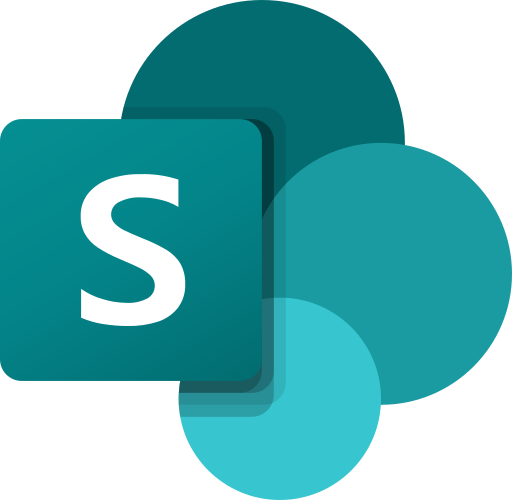
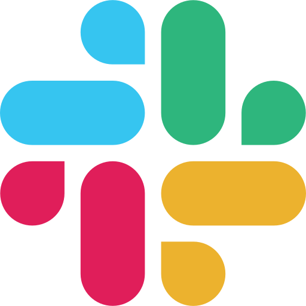

› Prépare-moi un brief du compte Horizon
Comprendre, sans chercher partout.
KOPERA interroge les sources auxquelles vous avez accès et rassemble les éléments utiles dans une synthèse claire.
L’intelligence opérationnelle par Kairros
Une seule conversation pour retrouver le bon contexte, faire avancer vos projets et automatiser vos opérations — sans changer les droits de vos utilisateurs.

SharePoint

Teams & Slack« Où en est le compte Horizon ? »
Le constat
Vos équipes perdent du temps à chercher, recouper et vérifier. KOPERA transforme cet environnement fragmenté en contexte fiable et immédiatement exploitable.
Quatre usages, une même intelligence
KOPERA interroge les sources auxquelles vous avez accès et rassemble les éléments utiles dans une synthèse claire.
Structurez les chantiers, partagez-les avec les bonnes personnes et agissez directement dans vos outils métier.
Contrats, réunions, relances : KOPERA détecte les échéances et remet les priorités au bon moment.
Automatisez une tâche, validez-la selon vos standards, puis partagez l’agent dans votre catalogue interne.
Comment ça fonctionne
Messageries, CRM, ERP, documents et applications métier.
KOPERA s’adapte à l’identité et aux permissions de chaque utilisateur.
Dans KOPERA ou depuis une interface d’IA compatible via MCP.
Produisez une synthèse, envoyez un message ou mettez à jour un outil.
Sécurité par conception
Chaque recherche et chaque action s’effectue dans le périmètre d’accès de l’utilisateur. Les informations restent gouvernées par les règles de l’entreprise.
Voir KOPERA en action
Nous vous montrons comment KOPERA peut s’intégrer à votre environnement et accélérer un cas d’usage concret.
Demander une démonstration